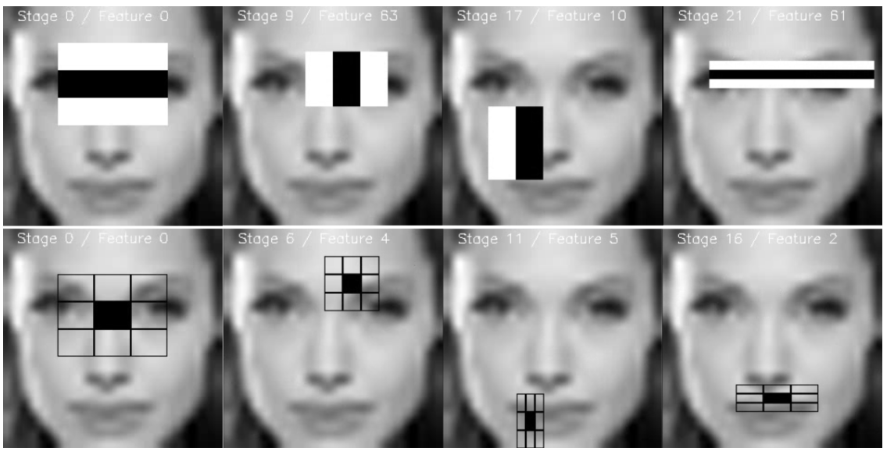
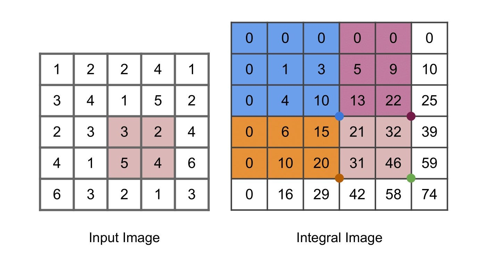
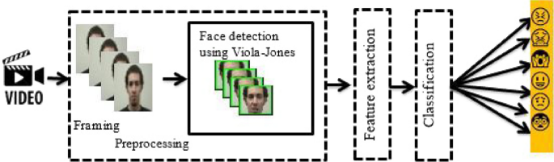

Viola-Jones | How we used to detect faces before neural networks
The years is 2004. Before neural networks, engineers had to be creative when detecting faces in footage and images. Since compute was scarce, efficiency was critical.
Viola–Jones is an early face-detection model that is still a beauty to study [3] [4]. Its speed was unparalled, and it came from several ideas working together. Firstly, it was a boosting algorithm: AdaBoost is used to turn a huge menu of simple visual tests into a compact classifier. Another ingredient are the filters: they describe local contrast and are simple enough to be generated synthetically. Last but not least, an integral image is computed, making those tests extremely cheap to evaluate. A cascade then spends most of its effort rejecting easy background windows.
To study those ideas in depth, we'll be exploring a Python implementation I stumbled upon online: Donny-Hikari/Viola-Jones. The explanations below combine the repository’s code, its detection entry point and the original Viola–Jones papers.
What the detector is looking for
A face is not recognized from a single pixel or color. The classic Viola–Jones detector asks whether small rectangular regions have particular average brightness relationships. A two-rectangle filter, for example, subtracts the sum of pixels in one region from the sum in its neighbor. Other filters compare three or four regions. Several variations of those feature exists, but their effect is always similar to the features considered in the original paper.
These filters are often called Haar-like features because their patterns resemble Haar wavelets [1]. The original method evaluates a very large set of candidate rectangles at different positions and sizes. During training, AdaBoost will selects a small set of useful tests and will combine them into a stronger classifier.

The filter design is part of the model’s appeal. Instead of asking a learned network to make up useful representation, introducing questions about interpretability, Viola–Jones starts with simple geometric patterns: perhaps a bright strip beside a dark strip, or a center band that differs from the bands around it. Such tests are easy to compute and can weakly respond to face structure, like the contrast between the eye region and cheeks. No one filter is a face detector by itself: the selected filters must work together to achieve an acceptable result.
The integral image is a clever trick
A straightforward rectangle filter would add up every pixel in each rectangle. While this would not be a problem for modern GPUs, in limited compute environments like CCTV or small camera edge processors that quickly adds up. Recomputing local sums wastes a lot of work: as hundreds of filter slide across an image and changes size, we may be repeating the same local sums hundreds if not thousands of times. Here comes the clever trick: use an integral image, also called a summed-area table, to store cumulative pixel sums. At each location, it records the sum of all pixels above and to the left.
Once that map is computed, any rectangular sum comes from four values at its corners. Subtract the two outer strips, then add back the overlap that was subtracted twice. So a small filter can get its rectangle sums in a ridicolously low fixed number of operations, whatever the rectangle’s area is. Note however that the map is not itself a set of pixel differences, rather it is a compact cache that makes those later differences fast and cheap.

Here is a small NumPy example of the idea, which is not excerpt from the repository and is presented here for clarity. We add zero rows and columns to make the corner formula work cleanly for rectangles that touch the image boundary.
import numpy as np
def integral_image(gray):
# ii[y, x] is the sum above and left of (x, y).
return np.pad(gray, ((1, 0), (1, 0))).cumsum(axis=0).cumsum(axis=1)
def rectangle_sum(ii, x0, y0, x1, y1):
# Coordinates describe [x0:x1, y0:y1): right and bottom are excluded.
return ii[y1, x1] - ii[y0, x1] - ii[y1, x0] + ii[y0, x0]
ii = integral_image(gray.astype(np.int64))
left = rectangle_sum(ii, 10, 8, 18, 24)
right = rectangle_sum(ii, 18, 8, 26, 24)
left_right_feature = left - rightFor a two-rectangle filter, the response is one box sum minus the other. Three and four-rectangle features add or subtract more box sums, so that the price to compute a filter scales linearly in the number of uniform patches. The cumulative table is built once for each image window, and then every candidate filter gets its sums from a small number of array reads.
Boosting turns many tests into a detector
The feature space is clearly enormous, but most candidate tests are only extremely weakly informative for recognizing faces. AdaBoost repeatedly chooses a weak classifier that helps separate face windows from non-face windows, gives more weight to the examples it currently gets wrong, and combines the selected classifiers with learned weights. Unlike models like random forests, boosting allows new entries to the flter collection to make up for the errors of its predecessors. In this setting, a weak classifier can be a threshold on one feature response.
The useful detail is that boosting does two jobs at once: it trains a classifier and selects which visual features the classifier needs. The final decision focuses on a small, informative subset of the generated candidate filters. That is a beautiful coupling of learning and engineering: feature selection directly reduces the work at detection time.
A cascade rejects easy negatives early
Still, applying a large set of weak features to an image, even with the integral map trick, can become expensive fast. This is why Viola-Jones uses a cascade of increasingly discriminative filters.
The cascade orders classifiers in stages of varying difficulty. A window that fails a simple, early stage is discarded immediately. Only windows that look promising pay for the later, more demanding stages. Most windows in a typical image are background, so quickly rejecting them saves a great amount of compute.
The stages are tuned to keep nearly all face candidates while rejecting many non-faces at each step. Again, the same idea from boosting is present: while a single stage can be permissive and only weakly discard background patches, the concatenation of stages becomes selective. Surviving windows can overlap because a face may be found at nearby positions and scales, depending on the algorithm patch size setting, so a final grouping step can merge repeated detections.

Walking through the repository
Having understood how Viola-Jones operates, we are ready to study the source code of the Python implementation in detail. The repository is due to user Donny-Hikary, and it implements the full Viola-Jones inference pipeline, from training to inference using webcam input. We'll see how the ingredients we discussed above combine together.
Walking through the repository
This is an online repository by Donny-Hikari that I found and am exploring here; it is not my project. It contains the feature code, the boosting and cascade code, a face detector, and a webcam script. Following those pieces in order makes it easier to see how the ideas from the first part of this article become a working detector.
Feature generation: the HaarlikeFeature class
The HaarlikeFeature class defines five feature types: two rectangles side by side, two stacked vertically, three side by side, three stacked vertically, and a four-rectangle diagonal pattern. Each feature compares the sums of its light and dark regions. For example, a two-rectangle feature responds to the difference between the left and right halves of its window. It does not need to recognize a face by itself; it gives a weak classifier a simple visual measurement to threshold.
The class generates many such measurements by moving each pattern around the image and trying different sizes. That is the large menu of possible filters discussed earlier: the feature generator makes the candidates, and boosting later chooses a small useful subset. The patterns are deliberately simple, but their placement and scale let them measure things like a dark edge beside a light region or a broader change across the window.
For speed, the code builds an integral image: a table whose entry at each position stores the sum of all pixels above and to the left. A rectangular sum can then be obtained from four table values:
sum_rect = ii[y1, x1] - ii[y0, x1] - ii[y1, x0] + ii[y0, x0]This is the clever trick: after the table is built, the number of lookups for a rectangle does not grow with the rectangle’s area. A feature made from several rectangles still needs only a few such sums. That makes it practical to evaluate a very large number of candidate features. The repository builds this table in _getIntegralImage and calculates feature responses in _getFeatureIn.
There is an implementation detail to check carefully here. The feature descriptions store w and h as widths and heights, while _getSumIn indexes the integral image using its last two arguments as far-edge coordinates. Some calls pass values such as w / 2 for those arguments. That appears to mix rectangle sizes with absolute coordinates, so the sums may not match the standard four-corner calculation for every feature. The intended feature mathematics is clear, but this part of the implementation deserves testing against a small hand-calculated image.
Boosting
The weak classifier in this repository is a decision stump: it picks one feature, one threshold, and one direction. In other words, it asks a question like “is this feature response greater than this threshold?” The decision-stump code searches candidate thresholds and keeps the feature-and-threshold combination with the lowest weighted error.
AdaBoost trains these stumps in sequence. After each one, it gives more weight to the training examples that were classified incorrectly, so the next stump has a reason to focus on them. Each stump’s vote is weighted by its error; lower-error stumps receive more influence. In the repository’s AdaBoost code, the vote weight follows the familiar expression:
alpha = 0.5 * log((1 - error) / error)This is where the huge feature menu becomes useful rather than overwhelming. The stump search can select among the generated features, and boosting combines the selected tests into a stronger classifier. The result is still built from simple measurements, but their sequence and weights let it express a more complicated decision.
The training loop
The repository’s cascade training code uses boosting to build a sequence of stages. Each stage is trained to reject as many non-face windows as it can while keeping its detection rate above a chosen target. A window rejected by an early stage does not need to be checked by later stages. This links the training procedure directly to the cascade’s computational efficiency: most background windows should be cheap to discard.
The code also keeps validation examples aside while training. It measures each stage’s detection rate and false-positive rate on those examples, then adjusts the stage’s confidence threshold to retain the required fraction of faces. If false positives remain above the target, windows that still pass are kept as negative examples for the next stage. These are hard negatives: the examples that have already fooled the current cascade.
while f1 > self.Ftarget:
# train a stage, measure its detection and false-positive rates,
# then keep the negative windows that still passThe loop’s exact details live in BoostedCascade. The point of the cascade is not that every window gets a sophisticated computation. It is that easy negatives are rejected early, leaving later stages to spend more work on the harder cases.
Merging proposed face rectangles into predictions
The detector scans many overlapping windows, so one face can produce several nearby rectangles. mergerect.py tries to consolidate these proposals. It compares each pair and computes their intersection. When that intersection covers enough of the smaller rectangle, the code treats the two detections as the same candidate.
if overlap_area >= min(area1, area2) * overlap_rate:
merged = average_coordinates(rect1, rect2)This comparison is based on the area of the smaller rectangle, not the usual intersection-over-union score. That means a small rectangle contained inside a larger one can count as a strong overlap even if the larger rectangle extends well beyond it. The merged coordinates are averaged, rather than expanded to the outer boundary of both boxes. Each merge also combines the detections’ counts, and a result is kept only if it reaches min_overlap_cnt. In the webcam script, the settings are overlap_rate=0.82 and min_overlap_cnt=4.
This is a cleanup step after scanning, not another boosted-cascade stage. It turns clusters of window-level proposals into fewer face predictions, using both how much boxes overlap and how many detections contribute to a cluster.
Putting it together: the FaceDetector class
The FaceDetector class connects the classifier to a full image. It loads a trained model, creates an integral image at each scale, and makes a grid of candidate windows. Each window is passed through the cascade; rejected windows are dropped, and only survivors need to continue through the remaining stages.
The class moves through scales by resizing the image and repeating the scan. A face can therefore be found at different sizes without changing the basic feature definitions. The detector also divides candidate windows into batches and uses worker processes to evaluate them. Parallelism can help with the many windows, while the cascade reduces the amount of work each window requires.
Inference: Webcam input
The webcam script shows how those pieces are used in a loop: read a frame, shrink it, convert it to grayscale, scan it at multiple scales, merge overlapping rectangles, and draw the remaining boxes.
gray = cv2.cvtColor(frame, cv2.COLOR_BGR2GRAY)
faces, totalTiles = faceDetector.detect(
gray,
min_size=0.0,
max_size=0.3,
step=0.9,
detectPad=(2, 2),
verbose=True,
getTotalTiles=True,
)
faces = mergeRects(faces, overlap_rate=0.82, min_overlap_cnt=4)Here, step=0.9 controls how the image scale changes between scans, and detectPad sets the spacing between candidate windows. The minimum size is clamped inside the detector, so min_size=0.0 does not mean it tests arbitrarily tiny windows. The scan returns detections in the coordinates of the image passed to detect.
One coordinate detail is worth noticing when reading the display code: it enlarges the shrunken frame again before drawing the rectangles, but the shown loop does not appear to scale the rectangle coordinates by the same factor. The boxes may therefore be misaligned on the enlarged frame. That does not change the theory of the detector, but it is a reminder to check how image resizing affects coordinates at each step.
Conclusion
Viola–Jones is still interesting to study nowadays. Its former primacy came from a small set of good simplifications: describe local contrast with rectangular filters, use an integral image to compute their responses cheaply, let boosting keep only useful filters, and arrange the resulting classifiers so easy negatives exit early. Each choice is understandable on its own, and together they made practical face detection possible on the hardware of their time.
The original paper reported examples of the performance of algorithm on the historic 1927 Solvay Council shot. While its easy to be unimpressed with its performance if one has experience with modern deep learning, its still fantastic to see how accurate it can be.
The design is a useful lesson even for newer vision models: representation, learning, and compute strategy are meant to fit together neatly like a puzzle. A good model is not only about what it can recognize, but also about how much work it does to reach an answer.
References
- Haar Wavelets, Wikipedia
- Deep facial expression detection using Viola-Jones algorithm, CNN-MLP and CNN-SVM, Hadhami Aouani & Yassine Ben Ayed (2024)
- Donny-Hikari, Viola-Jones repository (README and
detect.py). - Paul Viola and Michael Jones, “Rapid Object Detection using a Boosted Cascade of Simple Features,” CVPR 2001.
- Paul Viola and Michael Jones, “Robust Real-Time Face Detection,” International Journal of Computer Vision, 2004.